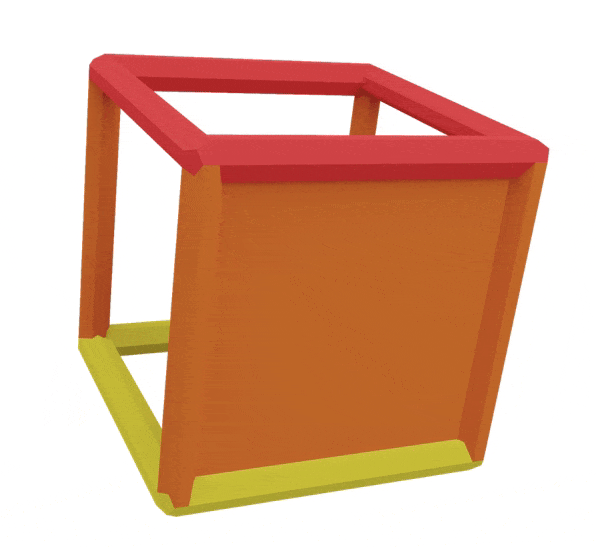
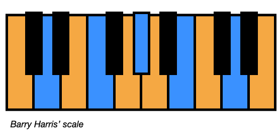

GEOMETRY:
Have you noticed how hypercubes have these primary coloured cubes?
'I thought there were only four blue notes but this cube has eight...'
Firstly, they are like an alpha cube,
in the sense we have two diminished squares which join to make four new faces
Remeber how the red and yellow squares make the four orange squares of the orange alpha cube?
In our blue cube, we have two blue squares on the top and bottom
Here's all the notes on the cube:
Notice how the top square and the bottom square notes are rotated by 90º against each other
By joining two blue squares together like this we've created four new squares:

Our 4 new faces only have three blue notes (with a note repeated)
Here's the blue face from the C major key cube:
We have the notes B, D(x2) and F
These are the notes of chord vii in C major, a B diminished triad: B, D and F
This allows us to have a seven note major scale in cube form:

the blue cube also allows us to have our eight note barry harris scale from the complementary colours page:
This scale is all four blue notes in the key of C major
We can think of it as using the full blue cube in the orange hypercube:
Why the doubled notes?
firstly they allow us to have the cubic structure of the hypercube,
Without the doubled blue notes we wouldnt have enough physical material to build the hypercube.
We also couldnt build the harmonically balanced key cube with only seven geometric points.
Secondly,
in the world of just innoation (where we tune notes to pure mathematical ratios rarther than equal temprement)
when you build a major scale, you have to choose between two tunings of the second degree of the scale
Do you go up a 5th twice from the tonic to tune it? (C, G, D)
or do you go down a minor 3rd and then down a 5th? (C, A, D)
This result is two slightly differently tuned notes
and this is the note that's doubled in the key cube
Obviously this isnt relevant to us as we're working with equal temprement
So both notes for us are tuned the exact same
But its a cool fact and feature of the hypercube
These diminished cubes encapsulate diatonic and full diminished harmony in one place
Back to Atria | Back to Geometry